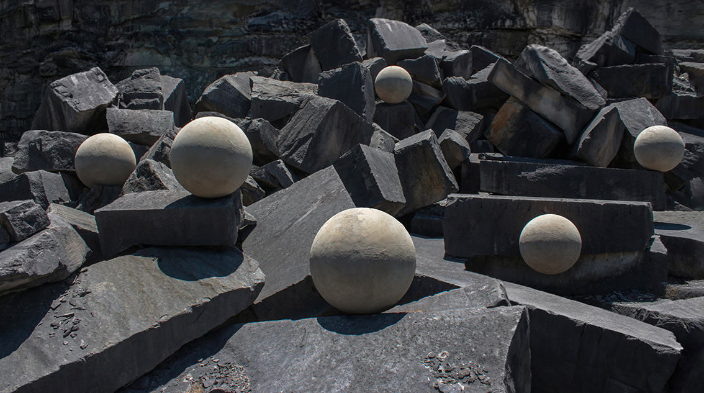
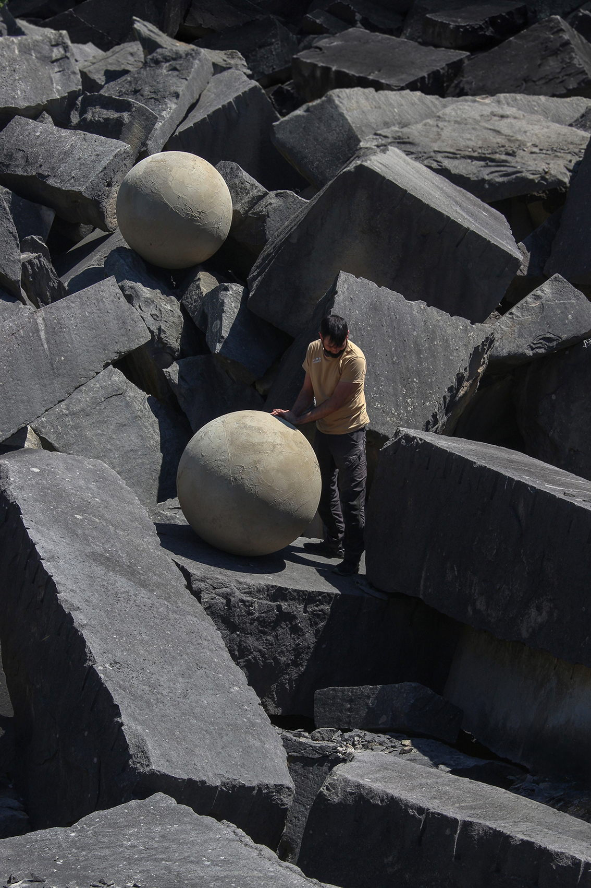
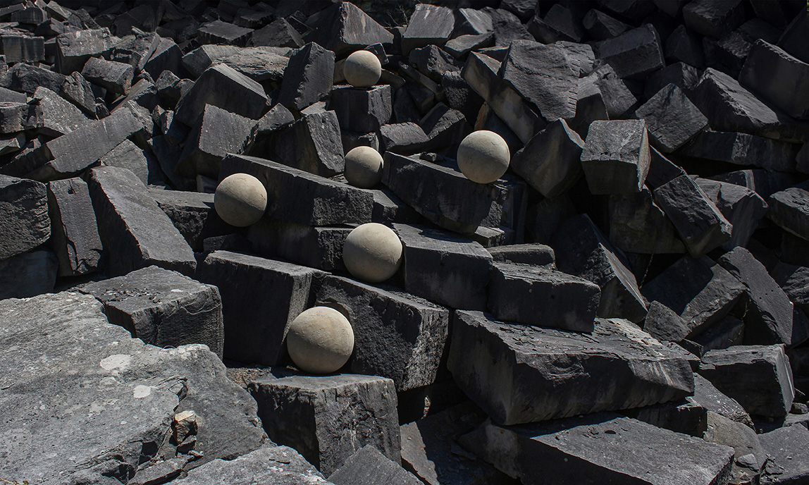

BALANCE
2026 · McKinney International Art and Design Residency, hosted by the Eskenazi School of Art, Architecture + Design at Indiana University Bloomington · Bloomington, Indiana, USA

Concept
Bloomington, Indiana is known for its limestone quarries, whose stone was used to build many iconic buildings across the United States, as well as numerous structures on the Indiana University campus itself. During our residency there, we were surrounded by limestone in all its forms. This work is a tribute to the material and its history, exploring the balance between the natural and the human-made.

